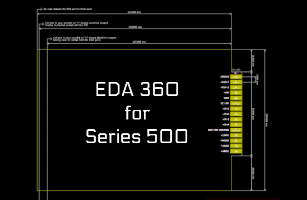

This project template provides the outline of a standard 3U
Series 500 Compatible
The board is compatible with the audio Lunchboxes made by A.P.I. or Radial or MIDAS etc, and designed for DIY Projects
The final PCB looks like the following:

(c)2021 Tormy Van Cool